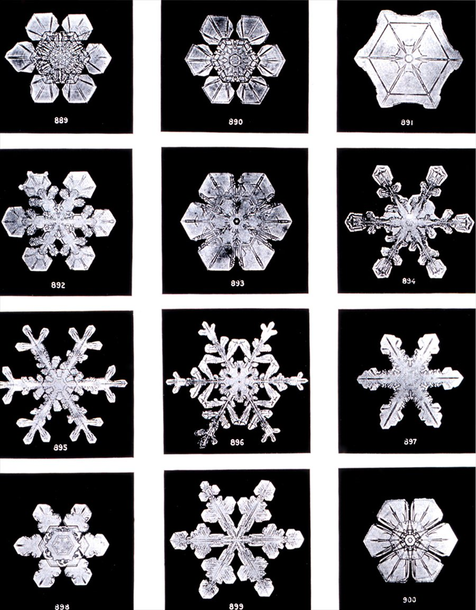

El lenguaje de la simetría: de los cristales a las partículas
Un cuadrado se ve igual si se lo gira 90°, 180° o 270°, o si se lo refleja respecto de una diagonal. Un círculo, si se lo gira cualquier ángulo. Las leyes de la física no cambian si se repite un experimento en otro lugar o en otro momento. Todas son simetrías: transformaciones que dejan algo igual. Y las simetrías de cualquier objeto tienen siempre la misma estructura matemática: forman un grupo.
La teoría de grupos es el lenguaje con que la matemática y la física hablan de la simetría. Nació para resolver ecuaciones algebraicas y terminó clasificando cristales, ordenando los espectros de los átomos y prediciendo partículas.
Un grupo es un conjunto de elementos con una forma de combinarlos que cumple cuatro reglas simples: combinar dos elementos da otro elemento del conjunto, la combinación es asociativa, hay un elemento que no cambia nada y cada elemento tiene un inverso que lo deshace. Las simetrías de un objeto cumplen esas reglas de manera natural. Hacer una simetría y después otra es una simetría; no hacer nada es la simetría neutra; toda simetría se puede deshacer.
La combinación no tiene por qué ser conmutativa. Las rotaciones en el espacio forman un grupo en el que el orden importa, y los grupos no conmutativos son, justamente, los más ricos. Hay grupos finitos, como las ocho simetrías de un cuadrado, y grupos continuos, como las rotaciones del plano, que forman un continuo de ángulos: son los grupos que intervienen en el teorema de Noether.
La idea de grupo apareció al estudiar las ecuaciones algebraicas. Según MacTutor, Évariste Galois fue, en 1831, el primero en entender realmente que la posibilidad de resolver una ecuación con fórmulas algebraicas estaba relacionada con la estructura de un grupo de permutaciones asociado a la ecuación. Para 1832 había descubierto que ciertos subgrupos especiales, hoy llamados normales, eran fundamentales. Su trabajo no se conoció hasta que Liouville publicó sus artículos en 1846. En 1854, Arthur Cayley dio una definición de grupo abstracto, separada de las permutaciones, y mostró cómo representar la multiplicación del grupo con una tabla.
Cristales. Las simetrías de un cristal, las combinaciones de traslaciones, rotaciones y reflexiones que lo dejan igual, forman grupos llamados grupos espaciales. Según MathWorld, en tres dimensiones hay 230 grupos espaciales, de los cuales 11 son imágenes especulares de otros. Toda estructura cristalina pertenece a alguno de ellos.

Átomos. En la década de 1920, Eugene Wigner aplicó la teoría de grupos a la mecánica cuántica, primero al estudiar el espectro de átomos con varios electrones. Su libro sobre las aplicaciones de la teoría de grupos a la mecánica cuántica apareció poco después del de Hermann Weyl, con un enfoque distinto. Wigner recibió el Premio Nobel de Física en 1963 por sus contribuciones a la teoría del núcleo atómico y de las partículas elementales.
Partículas: en el modelo de quarks, los grupos ordenan las partículas en familias. Según la revisión del Particle Data Group, con la simetría de sabor SU(3), las nueve combinaciones posibles de un quark y un antiquark ligeros (u, d y s) se agrupan en un octete y un singlete de mesones. Al incluir el quark c, más pesado, la simetría se extiende a SU(4), aunque muy rota por la diferencia de masas. Las partículas de una misma familia comparten propiedades por pertenecer a la misma «representación» del grupo, como los vectores de un mismo espacio.
Los grupos continuos de simetría, como las traslaciones y las rotaciones, están en el corazón del teorema de Noether: cada uno trae una ley de conservación. Los grupos discretos, como el de la paridad o la inversión temporal, se estudian aparte, en el artículo sobre las simetrías discretas. En ambos casos, la teoría de grupos dice qué combinaciones de simetrías son posibles y qué consecuencias tienen.
Un grupo es la estructura matemática de las simetrías: un conjunto de transformaciones que se pueden combinar, deshacer y repetir. Galois lo inventó para entender cuándo una ecuación tiene solución, Cayley lo volvió abstracto y Wigner lo llevó a la mecánica cuántica. Hoy la teoría de grupos clasifica los 230 tipos de simetría de los cristales, ordena las partículas en familias y, a través de Noether, conecta las simetrías con las leyes de conservación.
Pregunta para la comunidad: Un cuadrado tiene ocho simetrías: cuatro rotaciones y cuatro reflexiones. ¿Cuántas tiene un triángulo equilátero? ¿Y un hexágono regular? ¿Ves un patrón?